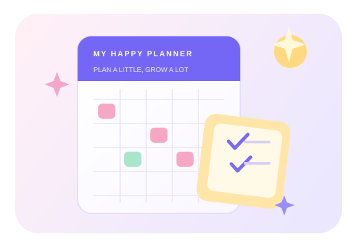

Find your focus
See your priorities clearly and give your attention to what matters most.
A calmer way to plan your day, stay on top of priorities, and celebrate the things you get done.
Your focus starts here.
Simple planning. Better days.
Keep deadlines, tiny wins, and big plans in one friendly space.
Build your plan →
Everything you need to move from “I should” to “I did.”
See your priorities clearly and give your attention to what matters most.
Add due dates, categories, and priorities to keep your day moving.
Check off completed tasks and watch your progress add up over time.
Start with one task, build a routine that works for you, and keep your momentum going.
Go to my tasks →Get everything out of your head and into your task list.
Give urgent work a clear place without losing sight of the rest.
Complete tasks at your own pace and see your progress grow.